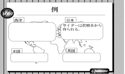

<html>
<head>
<title> Slide No.2 </title>
</head>

<frameset rows="350,*">

<noframes>
<body>
<a href="GIF/slide2.GIF"></a>

<a href="AU/voice2.au">
	</a>[108K]<p>
<!--		-->
まず、簡単な例を紹介し、知識の特徴を説明しましょう。<p>

<blink> 「サイダーは、炭酸水から作られる」</blink>
ということを皆さんご存知だと思います。<p>
<!--		-->

<hr>
<a href="slide3.html" target="_top">
	次の OHP へ</a><br><br>
<a href="slide1.html" target="_top">
	前の OHP へ</a><br><br>
<a href="HomePage.html" target="_top">
	OHP の一覧へ</a>
</body>
</noframes>

<frame src="slidebutton2.html">
<frame src="senslide2.html">

</frameset>

</html>